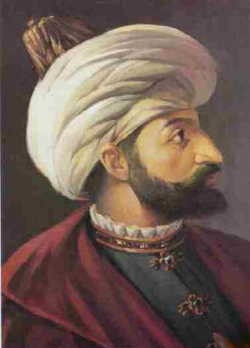

|
 |
IV.MURAD HAN I. Ahmed’in Mah-peyker (Kösem) Sultân adlı hanımından 28 Cemaziyülevvel 1021 (27 Temmuz 1612) tarihinde İstanbul’da dünyaya gelmiş oğludur. 1032/1623 tarihinde Veliahd Şehzâde Murad, Dördüncü Murad ünvanıyla 11 yaşını 1 ay 15 gün geçe tahta çıkmıştır. Bunun en önemli sebebi, Sultân Mustafa’nın şuurdan mahrum bulunması ve Devletin de Erzurum Valisi Abaza Mehmed Paşa’nın isyanı ve benzeri olaylar sebebiyle müthiş bir zaafa maruz kalmış olmasıydı. Tecrübeli devlet adamı Sadrazam Kemankeş Ali Paşa, Şeyhülislâm Yahya Efendi ve Kazaskerlerle de meşveret ederek, çocuk yaşta olmasına rağmen Sultân Ahmed’in en büyük ve erşed şehzâdesi Murad’ın Padişah olmasını zaruri görmüşlerdi. Mecnûnun yani akıl hastasının imâmeti yani Halife olması caiz görülmediğinden Padişah’ın hal‘i gerektiğini ve oğluna dokunulmayıp Saray’daki odasında göz hapsine alınacağını Vâlidesine ilettiler ve 9 Eylül 1623 sabahı Sultân Murad’ı halife ve hükümdâr ilan ettiler. |